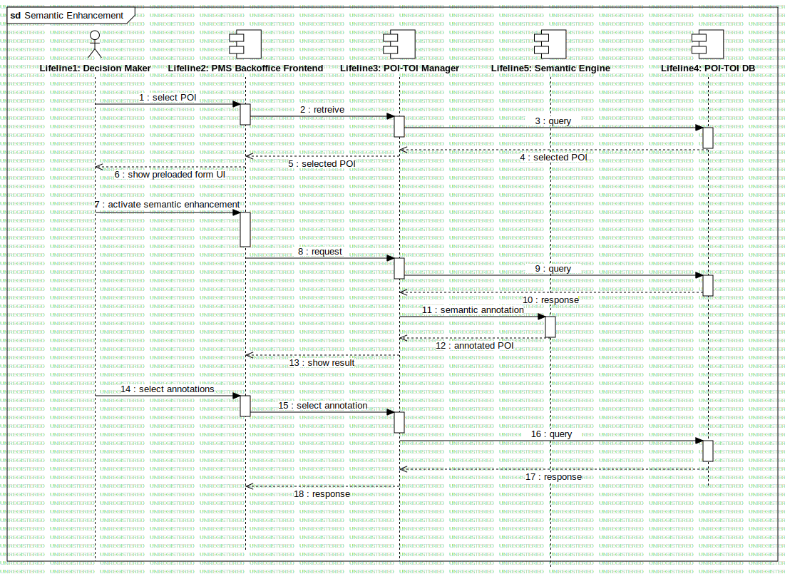

Semantic Enhancement
UMLInteraction
RASTA
::
Requirement Analysis
::
Generic Use Cases
::
Semantic Enhancement
::
Semantic Enhancement
Description
These interactions report a sample of semantic enhancement for a POI in the system.
Diagrams

Semantic Enhancement
Participants
Lifeline1: Decision Maker
Lifeline2: PMS Backoffice Frontend
Lifeline3: POI-TOI Manager
Lifeline4: POI-TOI DB
Lifeline5: Semantic Engine
Messages
select POI (Lifeline1→Lifeline2)
retreive (Lifeline2→Lifeline3)
query (Lifeline3→Lifeline4)
selected POI (Lifeline4→Lifeline3)
selected POI (Lifeline3→Lifeline2)
show preloaded form UI (Lifeline2→Lifeline1)
activate semantic enhancement (Lifeline1→Lifeline2)
request (Lifeline2→Lifeline3)
query (Lifeline3→Lifeline4)
response (Lifeline4→Lifeline3)
semantic annotation (Lifeline3→Lifeline5)
annotated POI (Lifeline5→Lifeline3)
show result (Lifeline3→Lifeline2)
select annotations (Lifeline1→Lifeline2)
select annotation (Lifeline2→Lifeline3)
query (Lifeline3→Lifeline4)
response (Lifeline4→Lifeline3)
response (Lifeline3→Lifeline2)
Properties
Name
Value
name
Semantic Enhancement
stereotype
null
visibility
public
isReentrant
true
Owned Elements
Semantic Enhancement